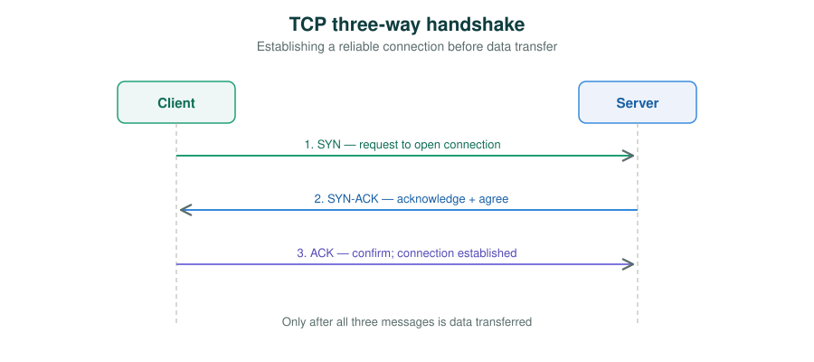
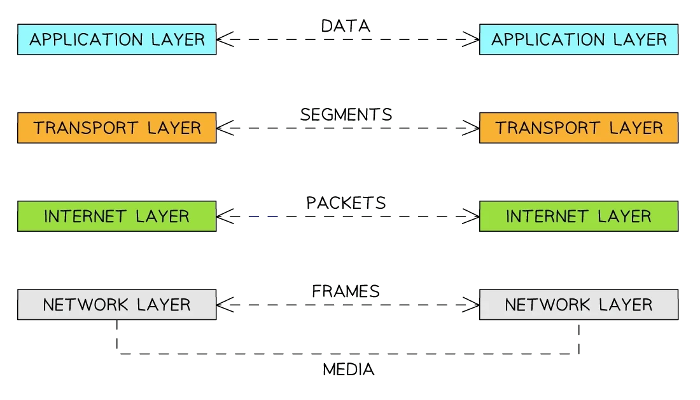
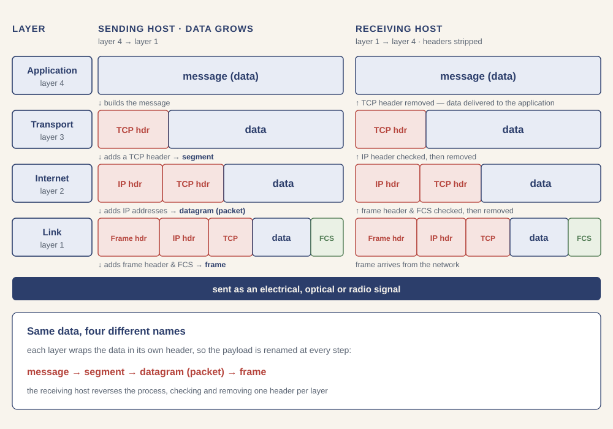
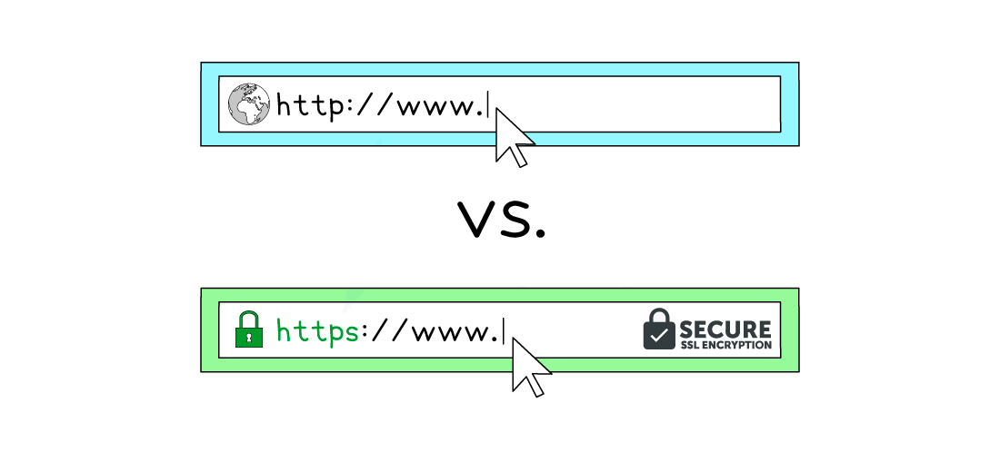
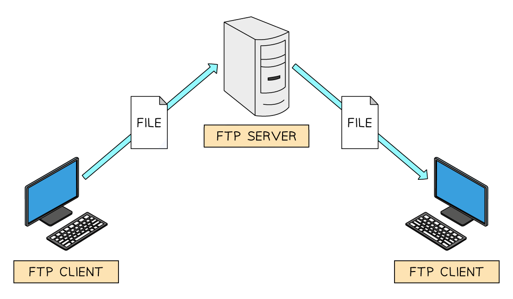
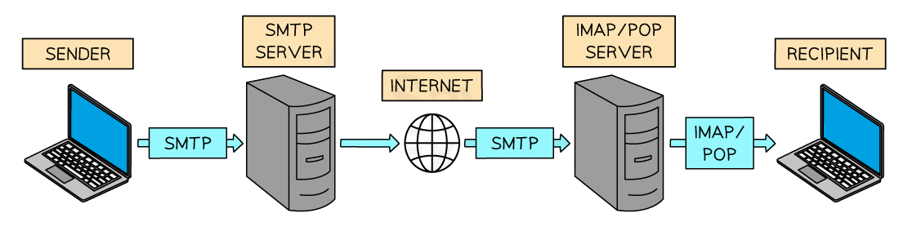
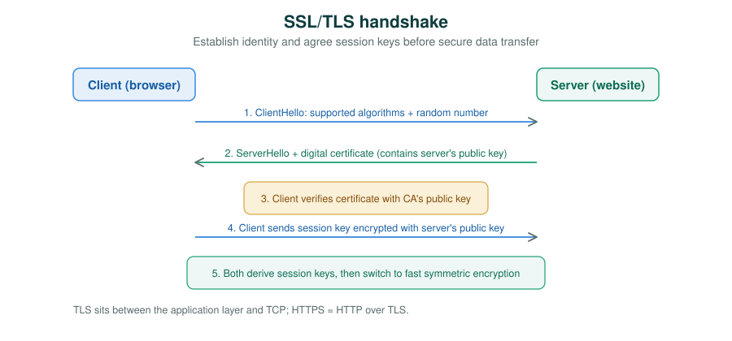

Need for protocols
What is a protocol?
- A protocol is a set of rules that define how computers communicate over a network
- They ensure that data is sent, received, and understood correctly by all devices, regardless of their manufacturer or operating system
- Without protocols:
- Devices would not know how to structure or interpret data
- Data could be lost, corrupted, or misrouted
- Communication between different hardware and software systems would break down
- Protocols are essential to guarantee:
- Reliable data transfer
- Consistent formatting and addressing
- Error checking and correction
- Security during transmission
- Examples of protocols include:
- TCP, IP, HTTP, FTP, SMTP
Why protocols are essential ★
- A standard set of rules — a protocol establishes a standard for communication, so sender and receiver agree in advance on format, timing and error handling
- Compatibility across platforms — protocols enable communication/compatibility between devices from different manufacturers/platforms
- No shared protocol, no communication — if two devices send messages to each other using different protocols, they would not be able to communicate properly
- Independent of software and hardware — protocols make communications independent of the particular software and hardware in use
- Successful data transfer — a standard set of rules enables successful data transfer between devices
Explain why protocols are essential for communication between computer systems. [2]
Answer
Q3(a) One mark per mark point (Max 2)
- MP1 Protocols set a standard for communication // Protocols establish a standard set of rules for communication
- MP2 Protocols enable compatibility between devices from different manufacturers/platforms
- MP3 Two devices wouldn’t be able to communicate/send messages to each other if they were using different protocols
Outline why protocols are essential for communication between computers. [2]
Answer
Q2(a) One mark per mark point (Max 2)
- Protocols provide a standard set of rules that enables successful data transfer between devices.
- Allows communication between devices on different platforms.
- Makes communications independent of software and hardware.
Protocol stacks
- The protocol stack is a way of organising network protocols into layers, where each layer is responsible for a specific function
- Each layer handles its own task independently
- Layers communicate with the layers directly above and below
- The stacked model makes the network easier to design, update, and troubleshoot
- Makes communication modular and efficient
- Allows different technologies to work together using standardised rules
- An example of a protocol stack is TCP/IP
- The protocols in a stack determine the interconnectivity rules for a layered network model such as the TCP/IP model
Why layering is used ★
- Layer independence — each layer only relies on the service offered by the layer below, so one layer can be redesigned or replaced without rewriting the others
- Separation of concerns — splitting the work into layers keeps each layer small enough to design, test and debug on its own
- Standards across manufacturers — a defined boundary between layers lets hardware and software from different vendors work together
- Adjacent-layer interaction only — each layer can only accept input from the next higher or the next lower layer; the interface between adjacent layers is the only interaction between layers
- Headers accumulate — data is added to headers as frames/packets pass through the layers
- User at the top, hardware at the bottom — user interaction takes place at the highest (Application) layer through protocols associated with that layer; direct access to hardware takes place at the lowest (Link) layer
The TCP/IP protocol may be viewed as a stack that contains four layers: Application, Transport, Internet, Link. Describe how the layers of the TCP/IP protocol stack interact with each other. [4]
Answer
Q4 One mark per mark point (Max 4)
- MP1 Each layer can only accept input from the next higher layer or the next lower layer
- MP2 There is an interface between the adjacent layers which is the only interaction between layers
- MP3 Data is added to the headers as the frames/packets pass through the layers
- MP4 The interactions are carried out by installed software
- MP5 User interaction takes place at the highest/Application layer of the stack through protocols associated with that layer of the stack
- MP6 Direct access to hardware takes place at the lowest/Link layer of the stack.
Complete the paragraph using the most appropriate words from the given list (some words are not used): adjacent · Application · BitTorrent · corresponding · Internet · layer · Link · lower · protocol · route · Transport · upper
The implementation of a … suite can be viewed as a stack. Each … of the stack has its own specific functionality and can only communicate with … layers of the stack. User interaction is associated with the highest level of the stack, which is the … layer. [4]
Answer
Q2 1 mark per correct word in correct place (max 4).
- protocol;
- layer;
- adjacent;
- Application.
TCP/IP protocol suite
What is TCP/IP?
- TCP/IP, or the Transmission Control Protocol/Internet Protocol, is a suite of communication protocols used to interconnect network devices on the internet
- This model splits the various protocols into four layers:
- Application
- Transport
- Internet
- Link
The four layers and their purposes
Application layer
- This is the layer where the communication process begins
- The application layer interacts directly with software applications, such as web browsers and email clients
- The application layer prepares data for transmission over the network by converting it into a format that can be sent and received over the network (known as encapsulation)
- It also defines which protocol the application must use — HTTP for a web page, SMTP for an email, FTP for a file transfer
- It provides services / an interface with the user — access to applications such as login, file transfer, network file access and email
- It provides mechanisms for securing communication, e.g. encryption/authentication
- It provides error detection and recovery mechanisms to handle application-specific errors
- It enables data transfer to/from the Transport layer and allows applications to access the services used in the other TCP/IP layers
Transport layer
- The transport layer receives data from the application layer
- The transport layer is responsible for end-to-end communication between the source and destination — it provides logical communication between applications running on different hosts and ensures data is delivered to the correct application process on the destination machine
- The transport layer breaks the data it receives down into smaller units called segments — these are the units usually called packets in exam questions
- Each segment is assigned a sequence number (so the data can be reassembled in the correct order at the destination)
- Each segment is also labelled with a header containing information (e.g. the packet number, the port numbers, a checksum)
- It ensures error-free, end-to-end delivery of data in sequence and provides error recovery techniques such as error detection codes and automatic repeat request
- It regulates network connections / provides flow control mechanisms to prevent data loss
- TCP is the transport protocol used when every segment must arrive intact; UDP is used when speed matters more than perfection
- Before data flows, TCP establishes a reliable connection using the three-way handshake:

Internet layer
- The internet layer receives segments from the transport layer
- It adds a header to each segment, including the sender’s IP address and the receiver’s IP address — the segment is now a datagram (packet)
- The internet layer identifies the intended network and host and is responsible for routing each packet across the network using the IP addresses in the headers, independently through the optimum route
- The IP protocol at this layer makes no promise that a packet arrives — that guarantee belongs to TCP above it
- It combines an IP address and a port number to form a socket
Link layer
- Also known as the network interface layer
- The link layer receives packets from the Internet layer and prepares them for transmission over the physical network
- It adds a frame header containing the MAC addresses of this hop (not the final destination), plus a frame check sequence (FCS) for error checking — the packet is now a frame
- The link layer translates the frame into an electrical, optical, or wireless signal that can be sent over the network
- Once the signal reaches the receiving end, the link layer at the receiver checks the FCS and translates it back into digital packets
- It ensures correct network protocols are followed, enables the upper layers to access the physical medium, and transports data within the network/local segment
- It maps IP addresses to MAC/physical addresses

Encapsulation and decapsulation ★
- Decapsulation — at the receiver each layer strips the header added by its counterpart, so the frame becomes a datagram, the datagram becomes a segment, and the segment becomes the original application data
- The four layers in one line — Application = what the user wants to send; Transport = end-to-end delivery, segmentation and port numbers; Internet = addressing and routing between networks; Link = transmission over the physical medium of a single hop
- The key idea: the data itself never changes, only the headers wrapped around it change — this is why the same payload is called a segment, then a datagram, then a frame
How a message travels from one host to another
- The syllabus asks for this in the context of one host sending a message to another host on the internet — learn it as a sequence, not as four separate definitions
- Sending uses the layers 4 → 1; receiving uses the layers 1 → 4
- Application — the user enters a URL; the browser builds an HTTP request message. A DNS lookup first converts the domain name into the server’s IP address
- Transport — TCP splits the message into segments, adds a header with the port numbers (port 80 for HTTP) and a sequence number to each, then agrees a connection with the server using a three-way handshake
- Internet — IP adds its own header with the source and destination IP addresses; each segment becomes a datagram (packet)
- Link — a frame header carrying the MAC address of the next device and a frame check sequence is added; the frame is converted into a signal and sent
- Across the network — at every router the frame header is stripped, the destination IP is read, the routing table is consulted and the packet is re-framed with a new MAC address and forwarded
- Link layer at the receiver — the FCS is checked, the frame header is removed, and the packet is passed up
- Internet layer at the receiver — the destination IP is confirmed, the IP header is removed
- Transport layer at the receiver — segments are reordered by sequence number; any missing segment is requested again; the TCP header is removed
- Application layer at the receiver — the browser reassembles the message and renders the web page

The Application Layer and Transport Layer are two layers of the TCP/IP protocol suite. Describe the purpose of the Application Layer and the purpose of the Transport Layer. [5]
Answer
Q3(a) Application Layer (max 3):
- To provide services / interface with the user // access to applications, for example login, file transfer, network file access, email, etc
- To provide mechanisms for securing communication e.g. encryption/authentication
- To define/provide protocols used to allow the exchange of data/communication // to contain programs that exchange data
- Error detection and recovery mechanisms to handle application specific errors
Transport Layer (max 3):
- To provide logical communication between applications running on different hosts // To ensure that data is delivered to the correct application process on the destination machine
- To ensure error-free, end-to-end delivery of data between a source and a destination, in sequence // to provide error recovery techniques such as error detection codes and automatic repeat request
- To break data into segments when sent and to reconstruct when received // To reassemble segments at destination
- To regulate network connections // to provide flow control mechanisms to prevent data loss
Outline the functions of the Transport and Internet layers of the TCP/IP protocol suite. [5]
Answer
Q2 Transport layer — One mark for each point (Max 3)
- MP1 The Transport Layer breaks data into manageable packets / performs segmentation
- MP2 It sequences the packets // adds data to the packet header // adds a packet header
- MP3 It sends the packets to the Internet / Network Layer // It receives data from the Application Layer
- MP4 It controls the flow of packets
- MP5 It handles packet loss/corruption // Acknowledges receipt of complete error free packets
Internet layer — One mark for each point (Max 3)
- MP6 The Internet Layer identifies the intended network and host
- MP7 It transmits packets to the (Data) Link / Physical Layer
- MP8 It routes the packets independently through the optimum route
- MP9 It addresses packets with their source and destination IP addresses
- MP10 It then uses an IP address and port number to form a socket.
Describe how the TCP/IP protocol suite is applied when a message is sent through the internet from one host to another. Do not describe the function of individual layers of the TCP/IP protocol suite. [4]
Answer
Q3(b) One mark per mark point (Max 4)
- MP1 The TCP/IP suite can be viewed as layers within a stack
- MP2 Each layer can only accept input from the next higher or the next lower layer/adjacent layer
- MP3 The user/sender/computer interfaces with the top layer/application layer to send/receive a message
- MP4 The message when sent passes from the top layer/application layer to the bottom layer/link layer
- MP5 The message when received passes from bottom layer/link layer to the top layer/application layer
- MP6 The link layer interfaces directly with the network and sends/receives the message
Standard protocols
Overview
- A protocol is a set of rules that govern communication on a network
- There are protocols for different purposes, such as:
- HTTP & HTTPS
- FTP
- POP3, IMAP & SMTP
- BitTorrent
HTTP & HTTPS
- Hypertext Transfer Protocol (HTTP) allows communication between clients and servers for website viewing
- HTTP allows clients to receive data from the server (fetching a webpage) and send data to the server (submitting a form, uploading a file)
- It is used to transfer hypermedia documents / web pages / (data) files between networked devices
- HTTP is a client/server protocol: the browser sends a request, the server returns a response
- HTTPS works in the same way as HTTP but with an added layer of security
- All data sent and received using HTTPS is encrypted
- HTTPS is used to protect sensitive information such as passwords, financial information and personal data

FTP
- File Transfer Protocol (FTP) allows sending and receiving files between computers
- Uploading and downloading files to/from a web server is often completed using FTP
- FTP offers greater efficiency and support for bulk transfers and large files such as resuming interrupted transfers
- FTP clients are software applications that use the FTP protocol to make the process easier for users

POP3, IMAP & SMTP
- A family of protocols that handle sending and receiving of email across the internet (WAN)
- The syllabus names POP3 — the version number matters in answers

SMTP
- Simple Mail Transfer Protocol (SMTP) is a protocol that allows communication between an email sender and the email server, and between different email servers using the internet
- In the diagram above, SMTP is used to transfer the sender’s email to their email provider’s server and SMTP is used to transfer the email to the recipient’s email server
- SMTP is a push protocol — it only sends (from a computer to a mail server, or between mail servers) and is never used to collect mail from a mailbox
POP3
- Post Office Protocol version 3 (POP3) is a pull protocol for downloading emails to a device from an email server
- Once the email has been retrieved it is normally removed from the server
- MS wording: a protocol used to retrieve/receive emails from a mail server to a computer
IMAP
- Internet Message Access Protocol (IMAP) is a protocol that lets users access and read their emails from any device without removing the message from the mail server
- A copy is retained on the mail server and emails are synchronised across all devices
- MS wording: allows users to access/read emails from any device without removing the message from the mail server // synchronises emails on any device
Advantages & disadvantages of POP3/IMAP
| Advantages | Disadvantages | |
|---|---|---|
| POP3 | - Frees up storage space on email servers - Faster on slow connections |
- Only access emails from the device they’re downloaded to - Emails deleted on the server once downloaded |
| IMAP | - View and manage emails from any device with internet access - Changes made on one device are synchronised on all connected devices |
- Server storage space can limit amount of retained emails - Requires internet access to view emails |
BitTorrent
- BitTorrent is a peer-to-peer (P2P) file-sharing protocol used to distribute large amounts of data efficiently across the internet
- Instead of downloading a file from a single central server, BitTorrent allows users to download pieces of the file from multiple users (peers) who already have parts of it
- This makes file sharing:
- Faster, as downloads come from many sources at once
- More efficient, as it reduces the load on any single server
- How it works (MS detail):
- A small torrent (descriptor) file is created by a peer; it contains metadata about the file to be shared
- The whole file must initially be located on at least one peer
- The file is broken into equal-sized pieces
- Other peers obtain the torrent file and connect to a tracker, which acts like a server holding data about all the computers connected to it (the swarm)
- Each peer downloads parts of the file from other peers until the entire file has been downloaded; as each peer receives a piece, they become a source for that piece
- A peer who has a complete file and shares it is a seed
- BitTorrent is often used for:
- Sharing large files, such as software, videos, or games
- Decentralised distribution, which avoids the need for central hosting
- While BitTorrent is a legal technology, it is sometimes used for sharing copyrighted content illegally, so ethical and legal use is important
(a) HTTP and IMAP are examples of protocols used in the Application Layer of the TCP/IP protocol suite. State the purpose of the HTTP and IMAP protocols. [2]
(b) Describe how files are shared using the BitTorrent protocol. [4]
Answer
Q3(a) One mark per mark point (Max 2)
- HTTP — to send and receive / transfer web pages / hypertext / images / videos
- IMAP — allows users to access/read their emails from any device without removing the message from the mail server // synchronises emails on any device
Q3(b) One mark per mark point (Max 4)
- Files are shared over a peer-to-peer network
- A small file, a torrent (descriptor file), is initially created by a peer
- The torrent (descriptor file) contains metadata about the file to be shared
- The whole file must initially be located on at least one peer
- The file is broken into equal sized pieces
- Other peers who wish to download the file first obtain the torrent (descriptor file) and connect to a tracker
- A tracker acts like a server that holds all the data about all the computers connected to it / the swarm
- Each peer downloads parts of the file from other peers until the entire file has been downloaded
- As each peer receives a piece of the file, they become a source for that piece of the file
- A peer who has a complete file and is sharing it is a seed // Once a peer has completely downloaded the file and made the file available to others in the swarm, they become a seed.
Identify and describe three protocols that are used in the Application Layer of the TCP/IP protocol suite. [6]
Answer
Q4 One mark for a correct protocol and one mark for a correct corresponding description (Max 6). Three from:
- HTTP/S — A protocol/secure protocol used to transfer hypermedia documents / web pages / (data) files between networked devices
- FTP — A protocol to download, upload and transfer files from one location to another on a network
- POP3 — A protocol used to retrieve/receive emails from a mail server to a computer
- IMAP — Allows users to access/read their emails from any device without removing the message from the mail server // synchronises emails on any device
- SMTP — A protocol used to send emails between mail servers // a protocol used to send emails from a computer to a mail server
- BitTorrent — A communication protocol used for peer-to-peer file sharing
Draw one line to connect each protocol to its most appropriate use.
Protocols: HTTP · BitTorrent · SMTP · IMAP Uses: to provide peer-to-peer file sharing; when retrieving email messages from a mail server over a TCP/IP connection; when transmitting hypertext documents; to map MAC addresses onto IP addresses; when sending email messages towards the intended destination. [4]
Answer
Q2(a) One mark for each correct line connecting a protocol to its most appropriate description (Max 4).
- HTTP → when transmitting hypertext documents
- BitTorrent → to provide peer-to-peer file sharing
- SMTP → when sending email messages towards the intended destination
- IMAP → when retrieving email messages from a mail server over a TCP/IP connection
SSL/TLS (secure sockets layer / transport layer security) ★
- The syllabus names only the six application protocols above, but SSL/TLS has been examined repeatedly as a protocol used to secure client-server communication; these questions are cross-listed with §17 Encryption, Encryption Protocols and Digital Certificates
- SSL and TLS provide communications security over the internet/network:
- they provide encryption
- they enable two parties to identify and authenticate each other
- they allow communication with confidentiality and integrity
- A connection is initiated by an application, which becomes the client; the application that receives the connection becomes the server
- Every new session begins with a handshake defined by the SSL/TLS protocols
- The client requests the digital certificate from the server (or the server sends it); the client verifies the server’s digital certificate and obtains the server’s public key
- The encryption algorithms are agreed and the symmetric session keys are generated/defined
- A secure session is established between client and server
- The two main protocols that form TLS:
- Handshake protocol — to establish a secure and reliable connection between two devices, systems or networks // permits the web server and client to authenticate each other and make use of encryption algorithms
- Record protocol — provides a secure and reliable way to send and receive data over a network // exchanges records between client and server // secures application data and ensures its integrity and authenticity during transmission // encrypts and authenticates data exchanged between a client and a server // deals with the format for data transmission
- Appropriate situations for SSL/TLS:
- when transmitting authentication data, e.g. passwords, session cookies
- when transmitting data that must be protected from modification on its way to or from a server, e.g. user input or results from the server
- when transmitting data classified as non-public

Secure Socket Layer (SSL) and Transport Layer Security (TLS) are two protocols. Explain how SSL/TLS is used when client-server communication is initiated. [4]
Answer
Q7 One mark for each correct marking point (Max 4)
- MP1 An SSL/TLS connection is initiated by an application/client.
- MP2 Every new session begins with a handshake as defined by the SSL/TLS protocols.
- MP3 The client requests the digital certificate from the server // The server sends the digital certificate to the client.
- MP4 The client verifies the server’s digital certificate
- MP5 … and obtains the server’s public key.
- MP6 The encryption algorithms are agreed. // The symmetric session keys are generated/defined.
- MP7 A secure session is established between client and server.
(a) Describe the purpose of the Secure Sockets Layer (SSL) and Transport Layer Security (TLS) protocols. [2]
(b) Explain how SSL/TLS protocols are used when a client-server communication is initiated. [4]
Answer
Q8(a)
- The SSL and TLS protocols provide communications security over the internet / network
- … they provide encryption
- They enable two parties to identify and authenticate each other
- … and communicate with confidentiality and integrity
Q8(b)
- An SSL/TLS connection is initiated by an application
- … which becomes the client;
- the application which receives the connection becomes the server
- Every new session begins with a handshake (as defined by the (SSL/TLS) protocols)
- The client requests the digital certificate from the server // the server sends the digital certificate to the client;
- the client verifies the server’s digital certificate
- … and obtains the server’s public key
- The encryption algorithms are agreed;
- the symmetric session keys are generated / defined
Identify the two main protocols that form Transport Layer Security (TLS) and state the purpose of each. [4]
Answer
Q10 One mark for identifying a protocol and one mark for stating its purpose
- Protocol 1: Handshake protocol — Purpose: To establish a secure and reliable connection between two devices, systems or networks // Permits the web server and client to authenticate each other to make use of encryption algorithms
- Protocol 2: Record protocol — Purpose: Provides a secure and reliable way to send and receive data over a network // To exchange records between the client and server // Responsible for securing application data and ensuring its integrity and authenticity during transmission // Encrypts and authenticates data exchanged between a client and a server // Deals with the format for data transmission
Beyond the syllabus
- The syllabus names only the six application protocols above and does not require the following — but they are needed to answer why the four layers exist, and they appear in textbook and past-paper wording
TCP and UDP
- Both sit in the transport layer; both use port numbers to reach the right application
- TCP is connection-oriented:
- Sets up a connection first (three-way handshake)
- Acknowledges every segment and re-sends anything lost
- Numbers the segments so they can be reassembled in order
- Used for web pages, email, file transfer — where every bit must arrive
- UDP is connectionless:
- No handshake, no acknowledgement, no re-sending
- Faster and lower overhead, but segments may be lost or arrive out of order
- Used for streaming, VoIP and online gaming — where a late packet is worse than a lost one
Ports and sockets
- A port number identifies which application on a device should receive the data — one IP address can run many services at once
- HTTP = 80, HTTPS = 443, FTP = 20/21, SMTP = 25, POP3 = 110, IMAP = 143
- A socket is the combination of an IP address and a port number, for example
192.168.4.17:443 - A connection is fully identified by two sockets — the sender’s and the receiver’s — which is why the transport layer header must carry both port numbers
Exam Question Index
| Sub-question | Exam point | Source |
|---|---|---|
| P31 Q3(a) | Why a protocol is essential | 2025 Winter P31 Q3(a) |
| P32 Q2(a) | Why a protocol is essential | 2024 Summer P32 Q2(a) |
| P32 Q3(a) | Why a protocol is essential | 2022 Winter P32 Q3(a) |
| P33 Q2 | Protocols as a layered stack | 2026 Summer P33 Q2 |
| P32 Q3(b) | Layered stack / host-to-host message flow | 2025 Summer P32 Q3(b) |
| P31 Q4 | Layer interaction in the stack | 2024 Winter P31 Q4 |
| P32 Q4 | stack / layered model / TCP/IP | 2023 Winter P32 Q4 |
| P32 Q2 | Four layers; link layer interconnects nodes | 2026 Summer P32 Q2 |
| P31 Q4 | Layer-to-description matching | 2026 Summer P31 Q4 |
| P31 Q3(a) | Application & Transport layer purposes | 2025 Summer P31 Q3(a) |
| P32 Q3(a) | Identify two TCP/IP layers | 2025 Summer P32 Q3(a) |
| P31 Q2(a) | Four-layer order | 2024 Summer P31 Q2(a) |
| P31 Q2(b) | Transport layer function | 2024 Summer P31 Q2(b) |
| P32 Q5(b) | Application layer purpose and function | 2024 Winter P32 Q5(b) |
| P31 Q2(b) | Link layer purpose | 2023 Winter P31 Q2(b) |
| P31 Q2 | Transport & Internet layer functions | 2022 Winter P31 Q2 |
| P32 Q3(b) | Two other layers and their functions | 2022 Summer P32 Q3(b) |
| P32 Q3(b) | Complete the TCP/IP stack diagram | 2022 Winter P32 Q3(b) |
| P31 Q3(b) | SMTP and IMAP (email protocols) | 2025 Winter P31 Q3(b) |
| P32 Q3(a) | HTTP and IMAP purposes | 2025 Winter P32 Q3(a) |
| P32 Q3(b) | BitTorrent file sharing | 2025 Winter P32 Q3(b) |
| P33 Q4 | Identify & describe three application protocols | 2025 Winter P33 Q4 |
| P31 Q2© | One Application layer protocol | 2024 Summer P31 Q2© |
| P32 Q2(b) | SMTP / POP3 / IMAP for email | 2024 Summer P32 Q2(b) |
| P32 Q2© | BitTorrent peer-to-peer file sharing | 2024 Summer P32 Q2© |
| P32 Q5(a) | Name & describe two Application layer protocols | 2024 Winter P32 Q5(a) |
| P31 Q2(a) | Match protocol to use | 2023 Winter P31 Q2(a) |
| P32 Q3(a) | Two Application layer protocols and uses | 2022 Summer P32 Q3(a) |
| P32 Q3© | Purpose of IMAP | 2022 Winter P32 Q3© |
| P33 Q7 | SSL/TLS client-server handshake | 2025 Summer P33 Q7 |
| P31 Q9(a) | Functions of SSL/TLS | 2025 Summer P31 Q9(a) |
| P31 Q9(b) | Situations where SSL/TLS is appropriate | 2025 Summer P31 Q9(b) |
| P32 Q10 | TLS Handshake and Record protocols | 2025 Summer P32 Q10 |
| P31 Q8(a) | Purpose of SSL/TLS | 2021 Winter P31 Q8(a) |
| P31 Q8(b) | SSL/TLS client-server handshake | 2021 Winter P31 Q8(b) |
| P31 Q3(b) | Packet switching (indexed as §14.1; actually §14.2) | 2025 Summer P31 Q3(b) |
| P31 Q3© | Packet switching (indexed as §14.1; actually §14.2) | 2025 Winter P31 Q3© |